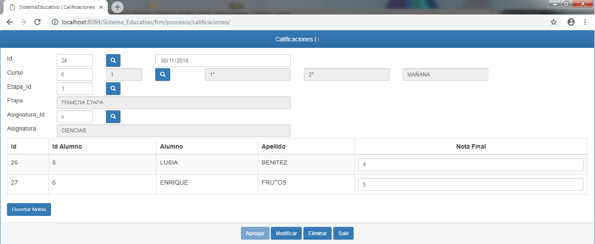

Proceso del Detalle
Manual de Usuario
En esta sección aprenderá sobre los formularios de detalle, que son bastante similares a los compuestos pero al mismo tiempo poseen ciertas diferencias.
Formularios de Detalle: los formularios de detalle son el último tipo de formulario, poseen campos de solo lectura y los botones que ya conocemos con sus funciones.
Estos formularios ademas poseen un pequeña sección para datos extras vinculados al registro principal, a continuación se presenta el formato de lo formularios de detalle.
En los formularios de detalle una vez que se ha realizado o recuperado un registro se desplegara una tabla donde se podrán cargar o modificar los detalles del registro principal.
Para poder realizar una carga del detalle se debe dar un click en el botón que se encuentra en la esquina superior derecha con el icono de suma, al dar click nos enviara a un nuevo formulario para la carga de esos datos, como se muestra en la imagen. El botón "Eliminar" en el formulario del registro principal eliminara dicho registro y el detalle vinculado al mismo.
Este es el formulario para la carga o modificación de los detalles, aquí se registran los detalles vinculados al registro principal o cabecera, para poder realizar la recarga se deben recuperar los datos con el buscador y en ciertos casos se debe realizar la carga manualmente para los campos que no son de solo lectura.
El funcionamiento de los botones es la misma para todos los formularios incluyendo la de detalles.

Para poder modificar un registro del detalle, debemos presionar el botón que posee el icono del lápiz, esto nos enviara nuevamente al formulario del detalle, pero con los datos ya recuperados en los campos.
Se presenta de esta manera, aquí se puede realizar la modificación de todos los campos, para aquellos que son de solo lectura para poder modificarlo, debemos traer un dato diferente del buscador, para los que no son de solo lectura, solo debemos ingresar al campo y modificar lo que este dentro.
El botón "Eliminar" cuando estemos dentro del formulario de detalle, solo eliminara ese registro y lo desvinculara del registro principal.

Por último, en los formulario de detalle existen dos que son excepcionales, pues presentan una estructura diferente de los demás.
Una vez ingresados los los datos en los campos y realizado el registro, aparecerá la tabla del detalle, pero esta ve aparecerá dentro de la tabla un pequeño campo para el ingreso de datos, donde debe ingresar el tipo de dato solicitado, una vez realizado la carga deberá presionar el botón "Guardar" y de manera automática los datos estarán registrados.
Created with the Personal Edition of HelpNDoc: Generate EPub eBooks with ease